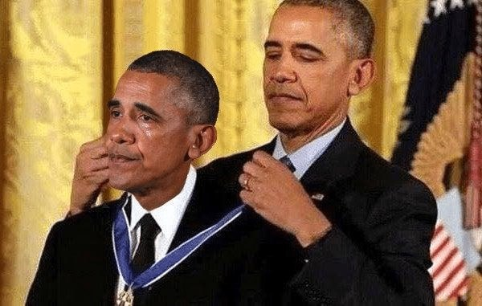
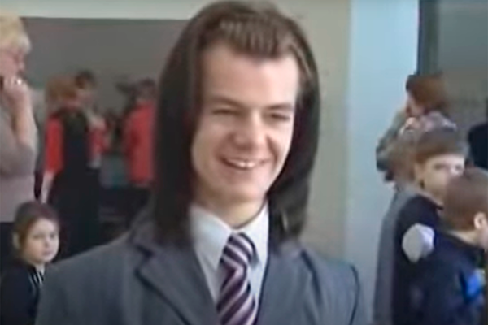
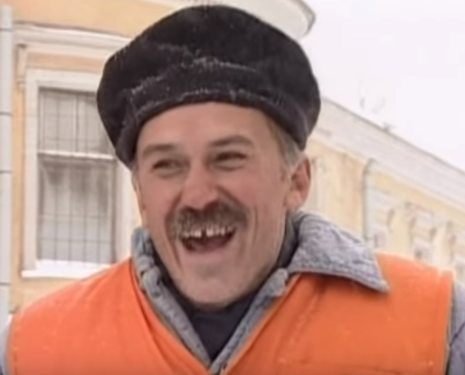
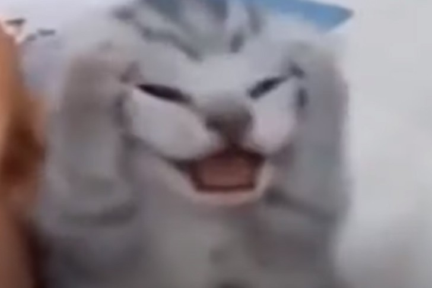

Смысл мема - юмористический фотошоп, на котором во время церемонии вручения Президентской медали свободы Барак Обама выглядит так, будто сам себя награждает титулом «Величайший президент всех времён». Мем появился после того, как американский президент вручил медали нескольким знаменитостям, а позже один сатирический интернет-ресурс заменил лицо награждённого (Брюса Спрингстина) лицом Обамы и добавил соответствующую подпись о самопоощрении. С тех пор это изображение используют для ироничного высмеивания самовосхваления, награждения себя за мелкие достижения или демонстрации нарциссизма.
Мем берёт начало из вирусного видео, снятого в 2008 году в школе. Герой ролика - Никита Литвинков - в пиджаке и с ободком на голове совершенно серьёзно описывает свой обед в столовой. Через несколько лет ролик разошёлся на цитаты, а особенно популярной стала финальная фраза про чай. Что он сказал: «Тут был хороший борщ, с капусткой, но не красный. Так… Сосисочки. Ну, ещё есть какой-то непонятный салат, куда крошат морковку, капусту и яблоки с ананасами. Вообще, он меня бесит. Вот… Ещё чоо… Вкусный чай, он так утоляет жажду, и я чувствую себя человеком!»
В 1998 году на экраны вышла четвертая серия второго сезона сериала "Улицы разбитых фонарей". Один из главных героев, по работе пришел в психбольницу, где случайно встретил старого знакомого, который устроился на работу дворником. Что там сказали:
- Ты поторопись, у нас щас обед, катлетки
- С макорошками
- C пюрешкой, с пюрешкой
- На обеде встретимся, ну будь здоров
Смысл мема — драматично изобразить состояние, когда всё идёт не по плану, накрывает отчаяние или случается что-то настолько нелепое, что остаётся только схватиться за голову. Этот жест идеально подходит для передачи беспомощности, ужаса или ощущения полной безысходности, и чаще всего мем используют как реакцию на бытовые, учебные и рабочие ситуации